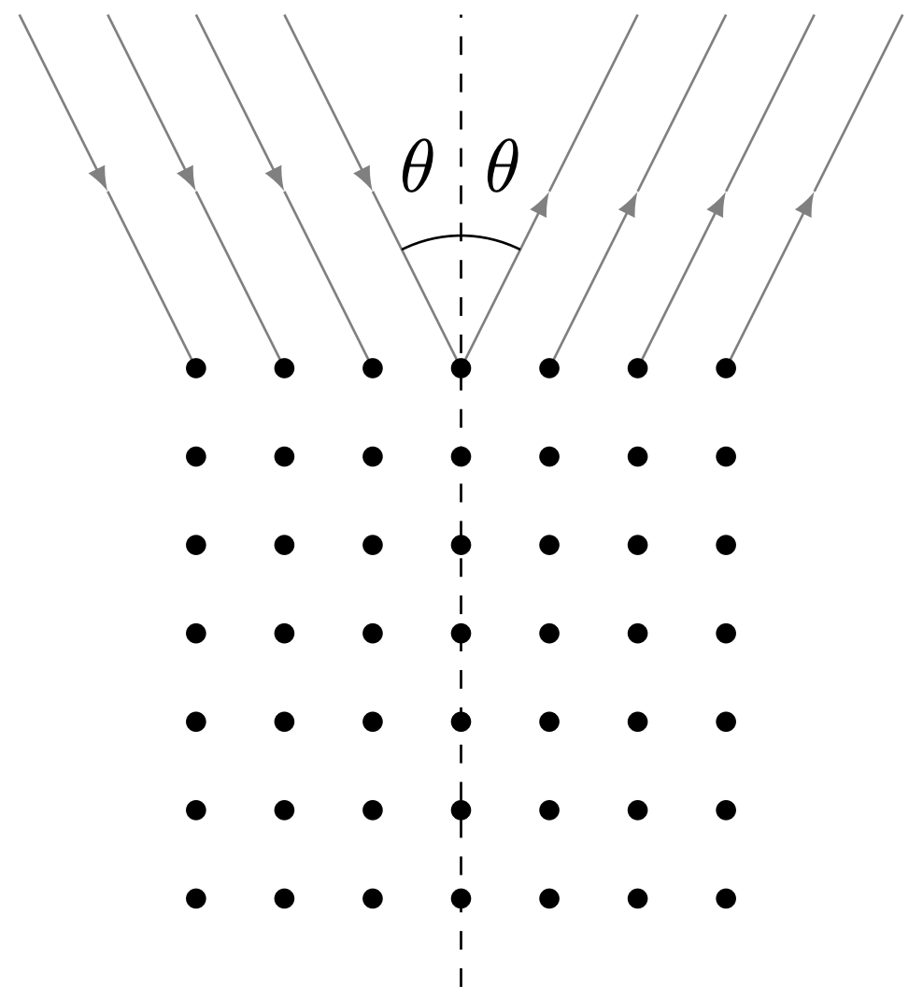
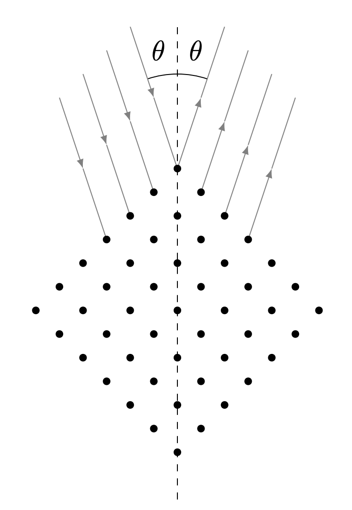
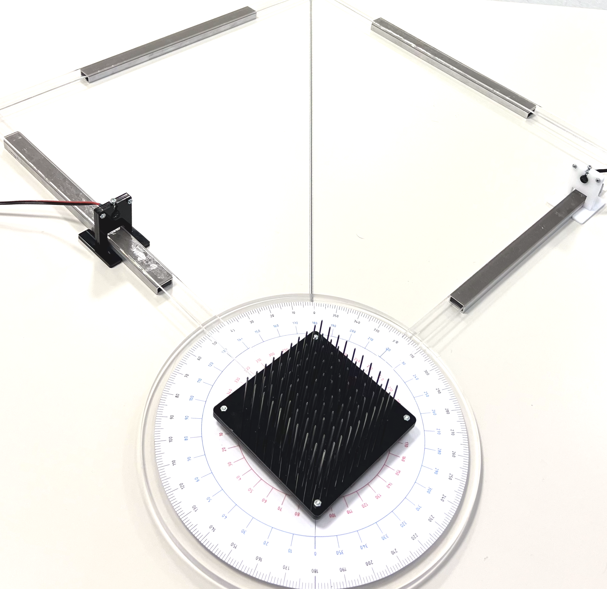
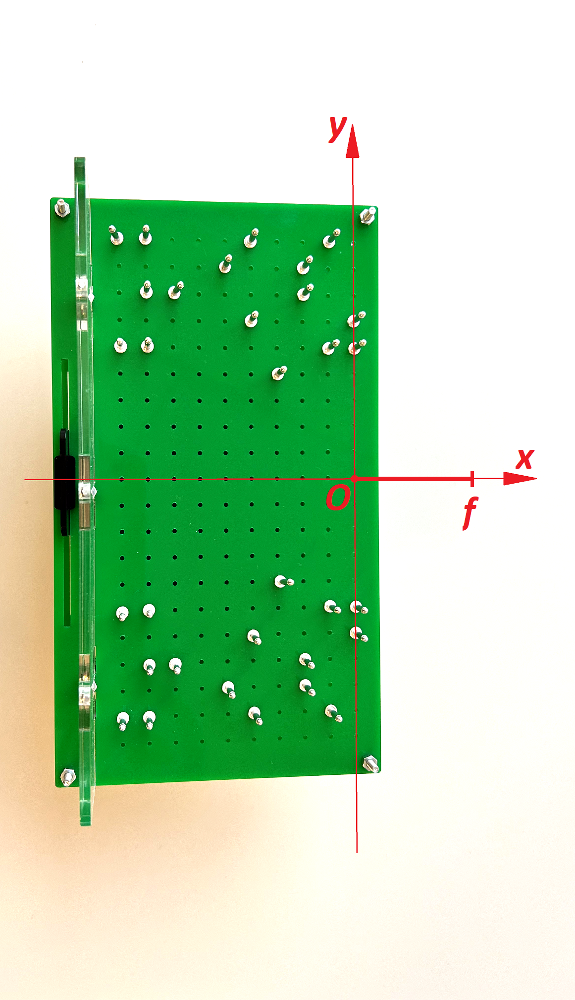
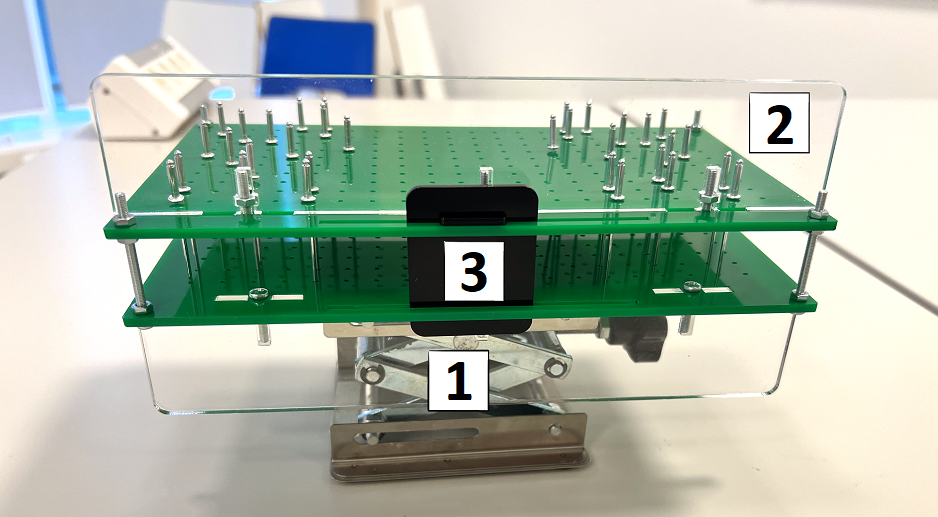

Fig. 1.
Y24 (2024) — English translation
As you know, sound is the phenomenon of propagation of elastic longitudinal waves in a medium. In a narrower sense, we will call these waves themselves sound. A sound wave propagating in space, like any other, can be described by the wave equation: $$\frac{1}{c^2}\frac{\partial^2 u}{\partial t^2} = \Delta u,$$ где $\Delta u = \frac{\partial^2 u}{\partial x^2} + \frac{\partial^2 u}{\partial y^2} + \frac{\partial^2 u}{\partial z^2}$, $u = u(x, y, z, t)$ — смещение частиц среды от начального положения вдоль направления распространения, $x$, $y$, $z$ — пространственные координаты, $t$ — время. Ультразвуком называется звук, имеющий частоту выше, чем воспринимаемый человеческим ухом. Обычно подразумевается, что частота ультразвука $\geq 20~kHz$. Напомним, что волновым фронтом называется геометрическое место точек среды, в которых волна имеет одинаковую фазу. Согласно принципу Гюйгенса-Френеля каждый элемент волнового фронта можно рассматривать как центр вторичного возмущения, порождающего вторичные сферические волны, а результирующее колебание в каждой точке пространства будет определяться интерференцией этих волн. Световые и звуковые волны имеют различную природу, однако описываются одинаковыми уравнениями, и для них могут быть применены одни и те же принципы распространения волн, поэтому мы можем говорить о дифракции и интерференции звука. Данная задача посвящена исследованию этих явлений.
$$\frac{1}{c^2}\frac{\partial^2 u}{\partial t^2} = \Delta u,$$
где $\Delta u = \frac{\partial^2 u}{\partial x^2} + \frac{\partial^2 u}{\partial y^2} + \frac{\partial^2 u}{\partial z^2}$, $u = u(x, y, z, t)$ — смещение частиц среды от начального положения вдоль направления распространения, $x$, $y$, $z$ — пространственные координаты, $t$ — время.
Ультразвуком называется звук, имеющий частоту выше, чем воспринимаемый человеческим ухом. Обычно подразумевается, что частота ультразвука $\geq 20~kHz$.
Recall that the wave front is the geometric location of points in the medium at which the wave has the same phase. According to the Huygens-Fresnel principle, each element of the wave front can be considered as the center of a secondary disturbance generating secondary spherical waves, and the resulting oscillation at each point in space will be determined by the interference of these waves.
Light and sound waves have different natures, but are described by the same equations, and the same principles of wave propagation can be applied to them, so we can talk about diffraction and interference of sound. This task is devoted to the study of these phenomena.
Equipment: Oscilloscope Generator Receiver in a white stand Transmitter in a black stand Double-slot plate Multi-slot plate Zone plates (3 pcs.) Plate stand Goniometer (all 4 arms have the same length) Plate with nails Focusing structure (issued upon request to those on duty) Lifting tables (3 pcs.) Tape measure 50 cm ruler Millimeter paper (3 pieces indicating the corresponding part in the corner of the sheet + 1 spare piece) Masking tape Protective screen BNC-BNC tee Connecting wires: BNC-BNC - 1 piece. BNC banana - 2 pcs. Inductors connected in series (not shown in photo)
Notes: The inductors provided to you are required to reduce low frequency noise. When recording a signal from the receiver, they should be connected in parallel to the corresponding channel of the oscilloscope. To reduce other noise, using signal averaging on an oscilloscope can be useful. Do not apply voltage to the transmitter with an amplitude greater than $1~В$, i.e. the double amplitude should not exceed $2~В$. Be careful when handling the goniometer and do not lift it or place other equipment on it. Careless handling may cause it to break. Do not place masking tape on the goniometer protractor. Be careful when working with the focusing structure used in part F. Do not turn it over or shake it, otherwise the diffusing centers installed in it may fall out of the holes. Do not remove the scattering centers from the plates or change their configuration. After completing the work, the graph paper should be signed, folded in half and submitted along with the decision. If any of the given sheets are missing, items where it is used will be scored 0 points. If you are using a spare sheet of graph paper, label the part of the problem in which it is used in the corner of the sheet.
In this part, you will find the optimal frequency $f$ for measurements and determine the corresponding values for the wavelength $\lambda$ and the speed of sound $v_{зв}$.
Place the transmitter and receiver at a distance of approximately $10~см$, facing each other, and fix them in a straight line. Apply a sinusoidal voltage with amplitude $A \approx 1~В$ to the transmitter.
In the future, use the frequency $f$ found in step A1 and do not change the voltage amplitude at the transmitter.
Note. Consider sound propagation to be an adiabatic process. Molar mass of air $\mu = 29~г/моль$.
Young's experiment is the first version of the double-slit experiment conducted by Thomas Young, which proved the validity of the wave theory of light. This part of the problem is devoted to a similar experiment, however, the behavior of not the light, but the sound front in a double-slit configuration will be studied.
Cover one of the slots in the double-slit plate with tape. Let us call the main axis (MA) of the system a straight line passing through the center of the slot perpendicular to its plane. Place the graph paper used in Part B on the table. Install a plate with a slot on it. Place the transmitter and receiver on the GO on opposite sides of the slot so that the transmitter is at a distance $20~см$ from it, and the receiver is at a distance $4~см$. When performing steps B1-B2, do not move the transmitter, and move the receiver only in the horizontal plane, not moving it away from the GO more than $8~см$. The graph paper must be signed and submitted along with the work.
Place the graph paper used in Part B on the table. Install a plate with a slot on it. Place the transmitter and receiver on the GO on opposite sides of the slot so that the transmitter is at a distance $20~см$ from it, and the receiver is at a distance $4~см$. When performing steps B1-B2, do not move the transmitter, and move the receiver only in the horizontal plane, not moving it away from the GO more than $8~см$.
The graph paper must be signed and submitted along with the work.
Remove the tape from the gap. Now let’s call the main axis (MA) of the system a straight line passing through the center of the plate perpendicular to its plane. Place the transmitter and receiver on the GO on opposite sides of the plate so that the transmitter is at a distance $20~см$ from it; select the distance to the receiver yourself so that the slits can be considered thin with good accuracy. Do not move the transmitter, and move the receiver only in a horizontal plane perpendicular to the GO.
Note. You must detect at least one signal minimum.
In this part you will explore the wavefront of a multi-slit plate. We will not describe the design of the plate, but will only examine its properties. Let us call the main axis (MA) of the system a straight line passing through the center of the plate perpendicular to its plane. It is known that if a point source of waves is placed on the GO, then the waves, due to the special arrangement of the cutouts, will be “focused” on the other side of the plate from the source on the GO at a distance $b$ from it, and for $a$ and $b$ a relation equivalent to the thin lens formula is satisfied: $$\frac{1}{a} + \frac{1}{b} = \frac{1}{f},\tag{1}$$где $f$ is the plate parameter, which Let's call it focal length.
The formula $(1)$ is equivalent to the formula for a thin lens, but it does not, however, follow from it that the plate changes the original wavefront in the same way as the lens. Next, we examine the wavefront of the sound wave after passing through the multi-slit plate, as well as the front created by the source itself.
Place the graph paper used in part C on the table. Install a multi-slot plate on it. Position the transmitter and receiver on the GO so that the transmitter is at its focus, and the receiver is on the other side of the plate at a distance of at least $30~см$. When performing steps C2-C3, do not move the transmitter, and move the receiver only in the horizontal plane, not moving it away from the GO more than $12~см$. The graph paper must be signed and submitted along with the work.
The graph paper must be signed and submitted along with the work.
For comparison, we examine the wave front without a plate. Place the receiver in its original position and then remove the plate.
We will consider the wavefront to be flat if the projections of the distances between its points on the GO do not exceed the wavelength $\lambda$.
A zone plate is a device for focusing light, sound, or other waves. Its operating principle is based on diffraction in the near zone: several odd Fresnel zones are cut out in the plate, starting with the first. Let us consider in more detail the theory of Fresnel diffraction. Let a point source of sound be located in front of a sound-impervious screen at a distance $a$ from it. The wavelength emitted by the source is $\lambda$. As is known, if only odd Fresnel zones are cut out in the screen, then the waves passing through them will interfere, forming a maximum intensity on the side of the screen opposite from the source. The distance $b$ between this maximum and the screen is determined by the radii of the Fresnel zones. Let us call the main axis (MA) of the system a straight line passing through the center of the plate perpendicular to its plane.
Let a point source of sound be located in front of a sound-proof screen at a distance $a$ from it. The wavelength emitted by the source is $\lambda$. As is known, if only odd Fresnel zones are cut out in the screen, then the waves passing through them will interfere, forming a maximum intensity on the side of the screen opposite from the source. The distance $b$ between this maximum and the screen is determined by the radii of the Fresnel zones.
Let us call the main axis (MA) of the system a straight line passing through the center of the plate perpendicular to its plane.
Place the graph paper used in part D on the table. The graph paper must be signed and submitted along with the work.
The graph paper must be signed and submitted along with the work.
Note. If you need to build several graphs at this point, build them on one graph paper.
In the last part of the problem, we considered the behavior of the wave front when the receiver is significantly removed from the multi-slot plate ($\geq 30~см$). Now we examine the wave front near the zone plate ($<30~см$). Place the transmitter and receiver on the GO zone plate with the shortest focal length so that the transmitter is at its focus, and the receiver is on the other side of the plate at a distance $5~см$ from it. When performing steps D5-D6, do not move the transmitter, and move the receiver only in the horizontal plane, not moving it away from the GO more than $8~см$. Let us introduce $\varphi(y)$—the phase of the receiver signal at a point distant from the GO by $y$. Let's denote it by $\Delta\varphi(y)=\varphi(y)-\varphi(0)$.
Place the transmitter and receiver on the GO zone plate with the shortest focal length so that the transmitter is at its focus, and the receiver is on the other side of the plate at a distance $5~см$ from it. When performing steps D5-D6, do not move the transmitter, and move the receiver only in the horizontal plane, not moving it away from the GO more than $8~см$.
Let us introduce $\varphi(y)$—the phase of the receiver signal at a point distant from the GO by $y$. Let's denote it by $\Delta\varphi(y)=\varphi(y)-\varphi(0)$.
Let us consider the scattering of X-ray radiation on a periodic structure, for example, a crystal lattice. At certain angles of incidence and reflection of a plane front, maximum intensity of the scattered wave is observed, which is associated with the interference of waves from different scattering centers. The described phenomenon is called Bragg diffraction, named after W. Bragg, who first discovered this phenomenon. Similar processes can be observed for ultrasonic waves. In the problem, the role of a crystal is played by a lattice of nails with a certain pitch $d$. Let us denote the angle of incidence of the wave on the grating $\theta$, and take the angle of reflection equal to the angle of incidence. Reflection of rays from a crystal lattice
Let us consider the scattering of X-ray radiation on a periodic structure, for example, a crystal lattice. At certain angles of incidence and reflection of a plane front, maximum intensity of the scattered wave is observed, which is associated with the interference of waves from different scattering centers. The described phenomenon is called Bragg diffraction, named after W. Bragg, who first discovered this phenomenon. Similar processes can be observed for ultrasonic waves. In the problem, the role of a crystal is played by a lattice of nails with a certain pitch $d$. Let us denote the angle of incidence of the wave on the grating $\theta$, and take the angle of reflection equal to the angle of incidence.
Let us denote the angle of incidence of the wave on the grating $\theta$, and take the angle of reflection equal to the angle of incidence.

Note. Consider the phase shift when a wave is reflected from different scattering centers.
Place the crystal model in the center of the goniometer disk, as shown in the photo. Place the transmitter and receiver on different arms of the goniometer. Place a protective shield between the arms of the goniometer so as to prevent the transmitter signal from directly hitting the receiver. When assembling the installation, please note that ultrasound is highly reflected from hard surfaces, including walls and protective screens.
Measurement diagram (there is no protective screen in the photo)

Let us now consider another incidence of rays on the grating. Let the grating be rotated by $45^\circ$ relative to the initial position (see figure). Reflection of rays from a crystal lattice
Let us now consider another incidence of rays on the grating. Let the grating be rotated by $45^\circ$ relative to the initial position (see figure).

Rotate the crystal model to $45^\circ$ as shown in the photo.
Measurement diagram (there is no protective screen in the photo)

In the previous part, we considered the interference of waves from periodic scattering centers, leading to the phenomenon of Bragg diffraction. In this part of the problem, we will consider a non-periodic structure that, thanks to diffraction on centers located in a special way, allows us to “focus” a plane wave front at a certain distance $f$ from its edge (see Fig. 4), which we will call focal. We will require that the waves scattered at the centers of the proposed structure come into focus, differing in phase by $2 \pi m$, where $m \in \mathbb{Z}$. Let's introduce a rectangular coordinate system $Oxy$ with the center at the focus, as shown in the photo. Please note that the axis $Ox$ is shifted relative to the axis of symmetry of the plate. In the designations of Fig. 5 we will call 1 and 2 the lower and upper curtains, respectively, 3 - the central curtain. Note. Make sure that the lower ends of the metal rods (diffusing centers) fit into the corresponding holes in the bottom plate. If you have violated the original configuration of the centers, you can restore it according to Fig. 4.
Let's introduce a rectangular coordinate system $Oxy$ with the center at the focus, as shown in the photo. Please note that the axis $Ox$ is shifted relative to the axis of symmetry of the plate. In the designations of Fig. 5 we will call 1 and 2 the lower and upper curtains, respectively, 3 - the central curtain.
Note. Make sure that the lower ends of the metal rods (diffusing centers) fit into the corresponding holes in the bottom plate. If you have violated the original configuration of the centers, you can restore it according to Fig. 4.
Scattering structure (top view)

Scattering structure (side view)

Let a scattering center be placed at a point with coordinates $(x,y)$ so that when scattered by it, the wave comes to focus with a phase shift $2\pi{}m$ relative to the unscattered wave front.
You are given a structure in which the scattering centers are located on curves given by the resulting expression for several values of $m$. To create a flat wavefront we will use a white zone plate. Place the transmitter at its focus at a distance of about $70~см$ from the plate on the lifting table and position the structure so that the central shutter faces the source. Place the receiver on the other side of the structure. Adjust the location of all installation elements so that the axis $Ox$ of the structure coincides with the axis passing through the transmitter, the center of the zone plate and the receiver. The center of the central curtain should be located on the same axis in order to reduce the amplitude of the signal reaching the receiver directly from the transmitter. Notes: Please note that you may observe a standing wave at the receiver. The amplitude of a focused wave can be comparable to the amplitude of a standing wave. Consider it known that $f < 20~см$.
You are given a structure in which the scattering centers are located on curves given by the resulting expression for several values of $m$.
To create a flat wavefront we will use a white zone plate. Place the transmitter at its focus at a distance of about $70~см$ from the plate on the lifting table and position the structure so that the central shutter faces the source. Place the receiver on the other side of the structure. Adjust the location of all installation elements so that the axis $Ox$ of the structure coincides with the axis passing through the transmitter, the center of the zone plate and the receiver. The center of the central curtain should be located on the same axis in order to reduce the amplitude of the signal reaching the receiver directly from the transmitter.
Source: https://pho.rs/p/3865